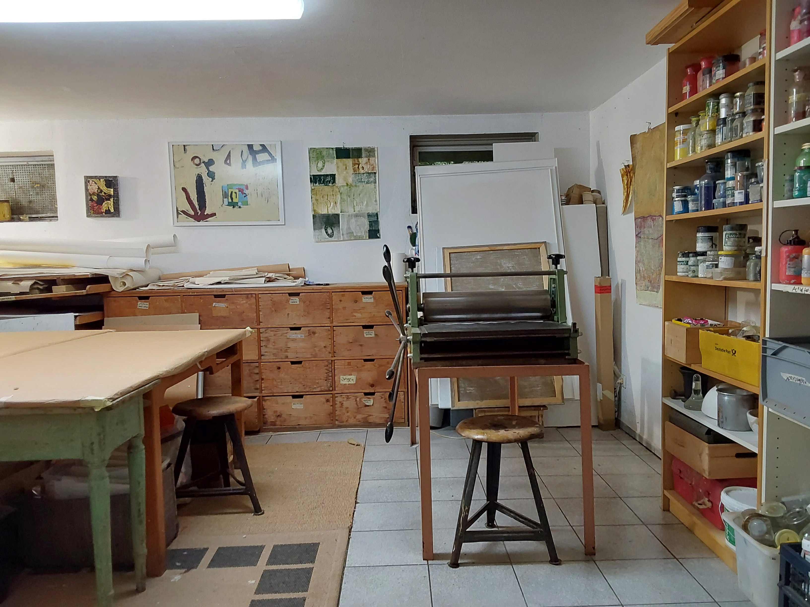

Brigitte Romann

Atelier in Thüringen (2002-2021)
Atelier in Schwabach (seit 2021)
Die Künstlerin zeigt eine Auswahl von Arbeiten, die in den letzten Jahren entstanden sind.
Die Werke spiegeln verschiedene Orte und scheinbar gegensätzliche Themen, mit denen sie sich immer wieder intensiv und aufs Neue auseinandersetzt.
Im Mittelpunkt steht dabei der Prozess des künstlerischen Schaffens, das Experimentieren mit unterschiedlichen Materialien und Techniken.
Ausgangsmaterial sind u.a. Skizzen, Fotografien, Fundstücke und Fragmente, alte Stoffe und Papiere.
Oft entstehen ganze Serien zu einem Thema, die mit unterschiedlichen künstlerischen Mitteln wie Zeichnung, Malerei, Monotypie, Collage, Installation von Objekten bis hin zu Textilarbeiten umgesetzt werden.
Aus der ungebrochenen Spontanität im Umgang mit Material und Themen resultiert eine überraschende Vielfalt an Werken. Scheinbar unbefangen, geradezu spielerisch changieren die Arbeiten zwischen Figurativ-Gegenständlichem und Abstraktion.